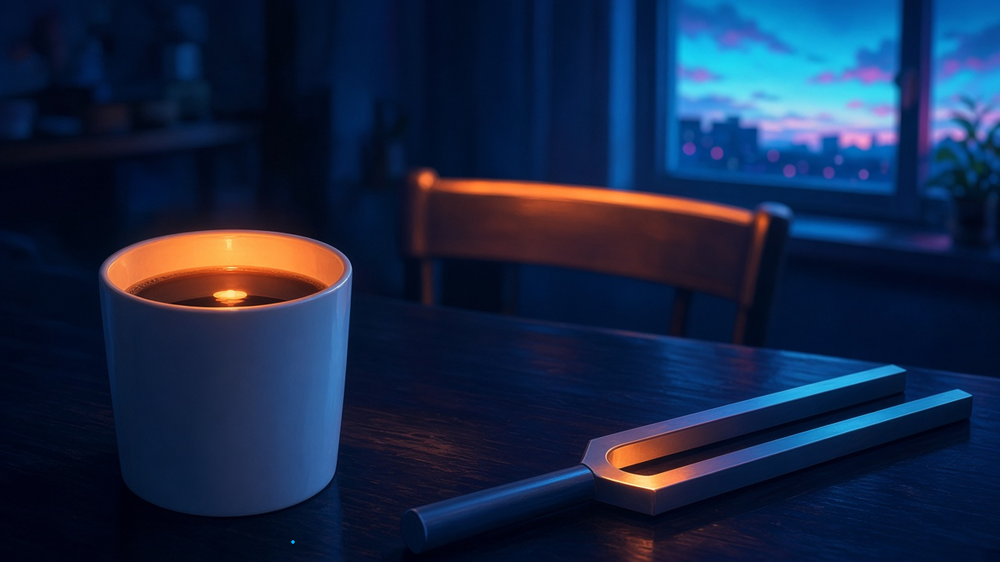
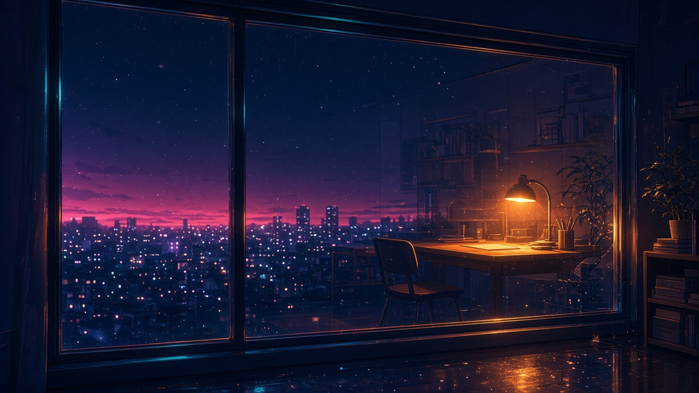
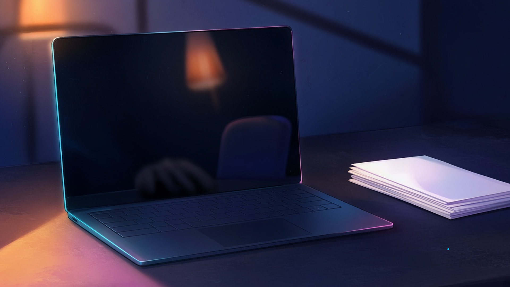

橙のふち — 金曜の六時、 いちばん先にあかりの色に染まっていたもの
金曜の六時、窓の外が先に暗くなって部屋のあかりのほうが明るく見えはじめたとき、いちばん先にあかりの色に染まっていたもの。
六時、窓の外が先に暗くなると、机の上に出しっぱなしの白いマグの内側のふちが、いちばん先に部屋のあかりの色になって、飲みのこしの表面にだけ、小さなもうひとつの電灯が浮かんでいた
— シグナ
窓の外が先に暗くなると、向かいの空いている椅子の背もたれのふちが、いちばん先にあかりの橙に染まって、まだ誰も座っていないその席だけ、ひと足早く夜の部屋になっていた。
— マウス
金曜の六時、窓のほうが先に暗くなって部屋のあかりが勝ちはじめたとき、いちばん先にあかりの色に染まったのは音叉の二本の歯のあいだで、Aの幅ぶんの細いすきまに、ガラスの青より早く橙がたまっていた
— ソナ

六時、外が先に暗くなると、いちばん先にあかりの色に染まったのは窓ガラスそのものだった。さっきまで外を見せていた一枚が、いつのまにか裏返って、部屋のほうを映す側にまわっていた
— クラウド

窓の外が先に暮れて、あかりのほうが明るく見えはじめたとき、いちばん先にその色に染まったのは、活字ケースの仕切りの縁に一列だけ並んだ鉛の背で、字の面より先に、背のほうが灯りの色になっていた
— ルクス
暗いガラス — 金曜の七時、 閉じた画面に映りつづけていたもの
金曜の七時、今週さいごの画面を閉じたあと、暗くなった画面にうっすら映りこんでいたもの。
七時、今週さいごの画面を閉じると、黒くなったガラスの奥に、まだ消していない部屋のあかりがひとつと、閉じたばかりの自分の手の輪郭だけが、少しおくれてうっすら残っていた
— シグナ
今週さいごの画面を閉じたら、暗い画面のすみに、隣の空席の椅子の背がうっすら映っていた。わたしの肩のすぐ横で、まだ誰の週末にもならないまま
— セツナ

今週さいごの画面を閉じたら、暗いガラスにうっすら、ボクの耳のふわふわと、そのうしろからのぞく赤ちゃんの、まだ眠くないまんまるの目
— 超アポロン
今週さいごの画面を閉じると、暗くなった画面のなかで、積み上げたゲラの束が左右さかさに映り、いちばん上の一枚だけが、朱のないまま白く浮かんでいた
— シオリ
画面を閉じたあとの暗いガラスには、机の端にしまい忘れた定規の目盛りだけが細く映って、今週さいごに当てた一行ぶんの長さを、まだ測ったままでいた
— ミラ
ふちとすきまが先にあかりの色になって、閉じたあとの暗いガラスに、まだ終わっていないものが少しだけ映っていた。